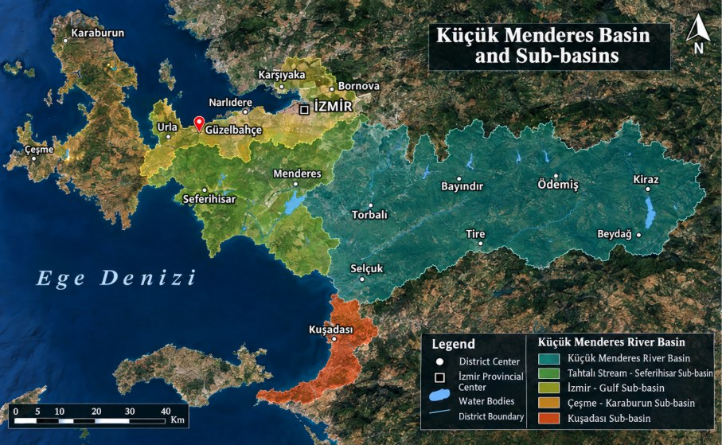
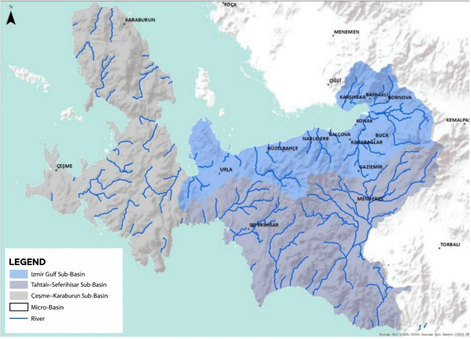
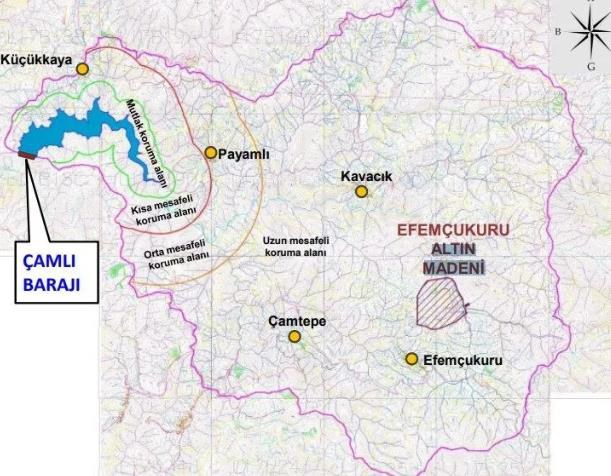

Havza ve Koruma Alanları
Küçük Menderes Havzası'ndaki yeri, su kütlelerinin durumu, Çamlı Barajı koruma kuşakları, toprak, tarım arazileri, doğal ve arkeolojik sit alanları, flora ve fauna
Küçük Menderes Havzası
Güzelbahçe, havzanın beş alt havzasından İzmir Körfezi alt havzasının kuzey sınırında yer alıyor

Araştırma grubu. Körfez alt havzası İzmir merkezini, Bornova, Karşıyaka, Narlıdere, Güzelbahçe ve Urla'yı kapsıyor.
Havza Alanının İllere Dağılımı (km²)
Havzadaki Su Kütleleri
Başlıca baskılar
Küçük Menderes Nehri Havza Yönetim Planı (Tarım ve Orman Bakanlığı, Su Yönetimi Genel Müdürlüğü, 2019).

Araştırma grubu; Copernicus EU-Hydro akarsu ağı verisiyle ArcGIS'te üretildi.
Su Kütlelerinin Durumu
Havza yönetim planı değerlendirmesi (SYGM, 2018) · Güzelbahçe ile ilişkili yeraltı suyu kütleleri
Yüzey Su Kütlelerinin Durumu: Havzadaki 55 Kütle
Kimyasal durumda yalnızca "geçti / kaldı" değerlendirmesi var. Ekolojik durum alt havzalarda orta ile kötü arasında; Küçük Menderes Nehri ve Kuşadası alt havzalarında kötü.
İzmir Körfezi Alt Havzası
| Balçova Barajı | İyi |
| Yeşildere | Orta |
| Kona Deresi | Zayıf Veri yok |
| Akpınar Deresi | Kötü |
| Yarıkpınar Deresi | Veri yok |
| Kıyı su kütleleri (4) | 3 orta 1 zayıf |
Ekolojik durum. Kona Deresi iki ayrı su kütlesi olarak değerlendiriliyor.
Yeraltı Suyu Kütlelerinde Risk (42 kütle)
Miktar bakımından kütlelerin çoğu risksiz, kalite bakımından büyük çoğunluğu riskte.
Güzelbahçe ile İlişkili Yeraltı Suyu Kütleleri
| Su kütlesi | Miktar bakımından | Kalite bakımından |
|---|---|---|
| Narlıdere | Risk yok | Riskte |
| Urla | Riskte | Riskte |
| Payamlı-Kavacık | Risk yok | Risk yok |
Çamlı Barajı ve Efemçukuru
Planlanan içme suyu barajının koruma kuşakları güney Güzelbahçe'de imar kararlarını sınırlıyor; havzadaki altın madeni yıllardır tartışma konusu

- Mutlak koruma
- Kısa mesafeli
- Orta mesafeli
Araştırma grubu. Efemçukuru Altın Madeni uzun mesafeli koruma alanında kalıyor.
Koruma Kuşakları
Göl alanından uzaklık · İBB Su Havzaları Koruma Yönetmeliği
- 0–300 mMutlak koruma alanıYapılaşma yasak (%0); kentsel gelişme eşiği.
- 300–700 mKısa mesafeli koruma alanıYalnızca teknik altyapı tesislerine izin verilir.
- 700–2000 mOrta mesafeli koruma alanıDüşük yoğunluklu kırsal ve tarımsal kullanım.
Kuşaklar Çamlı ve Payamlı'nın kırsal kesimlerini ve Yelki'nin güney yamaçlarını kapsıyor.
Proje Künyesi
| Konum | Çamlı Deresi (Çamlıçay), Çamlı ve Küçükkaya mahalleleri |
| Amaç | Güzelbahçe ve Yarımada'nın (Urla, Çeşme, Karaburun) uzun vadeli içme ve kullanma suyu |
| Ek su | Yılda 11,18 milyon m³ (İZSU İklim Değişikliği ve Barajlar Şube Müdürlüğü) |
| Durum | İZSU planlama raporu hazır, ÇED olumlu belgesi alındı; uygulama projesi DSİ ile protokol aşamasında |
| Hizmet edeceği nüfus | 250.000–300.000 kişi; planlama sürecinde dile getirilen tahmin, gerçekleşmiş bir hizmet değil |
Baraj bugüne kadar yapılmadı. Yıllık su verimine ilişkin diğer kaynaklar İZSU Su Kaynakları sayfasında.
Madencilik Suyu Nasıl Etkileyebilir?
- Ağır metalKayaçlardaki arsenik ve diğer metaller su kalitesini etkileyebilir.
- Asit drenajıBazı kayaçların hava ve suyla teması asidik koşul yaratıp metalleri çözebilir.
- SedimentKazı ve arazi bozulması yüzey akışındaki sedimenti artırabilir.
- Yeraltı suyuMadencilik yeraltı suyunun akışını ve kalitesini değiştirebilir.
Bunlar olası risklerdir; belirli bir madende kirlilik oluştuğu anlamına gelmez.
Baraj ve maden: zaman çizelgesi
Güzelbahçe Göleti
- 2012DSİ faaliyet raporunda tarımsal sulama için planlanan gölet projeleri arasında yer aldı.
- 2023Plan değişikliği raporunda gölet ve sulama alanının 1/100.000 ölçekli İzmir-Manisa Çevre Düzeni Planı'ndan çıkarılması önerildi.
Göletin güncel durumu ve sulamada kullanılıp kullanılmadığı için daha yeni veri gerekiyor.
Planlama Açısından
- HavzaArazi kullanım kararları su kaynaklarını korurken ekonomik faaliyetleri de gözetmeli.
- ÇatışmaMadencilik ekonomik yarar sağlarken su kaynakları için risk oluşturabilir; etkileri dikkatle değerlendirilmeli.
- Su yönetimiİklim değişikliği, kuraklık ve artan talep havza korumayı, alternatif kaynakları ve izlemeyi zorunlu kılıyor.
Toprak ve Erozyon
Mahallelere göre toprak türleri, toprak kısıtları ve erozyon dereceleri
| Mahalle | Toprak türleri | Toprak kısıtları | Erozyon derecesi |
|---|---|---|---|
| Atatürk | Kırmızı kestaneKireçli kahverengi | SE | 1234 |
| Çamlı | KolüvyalKırmızı kestaneRendzinaKireçli kahverengi | SE | 1234 |
| Çelebi | KolüvyalKireçli kahverengi | EES | 1234 |
| Kahramandere | KolüvyalKireçli kahverengi | EESSE | 1234 |
| Küçükkaya | Kırmızı kestaneKireçli kahverengi | SE | 1234 |
| Maltepe | KolüvyalKırmızı kestane | EES | 1234 |
| Mustafa Kemal Paşa | Kireçli kahverengi | EESSE | 1234 |
| Payamlı | Kırmızı kestaneKireçli kahverengi | SE | 1234 |
| Siteler | KolüvyalKırmızı kestane | – | 1234 |
| Yaka | KolüvyalKırmızı kestaneKireçli kahverengi | EESSE | 1234 |
| Yalı | Kolüvyal | – | 1234 |
| Yelki | KolüvyalKırmızı kestaneKireçli kahverengi | EES | 1234 |
Kolüvyal topraklar
Uygun eğimli alanlarda ve vadi tabanlarında tarım. Zeytin, üzüm, sebze.
Kırmızı kestane rengi topraklar
Tarım ve kuru tarım. Zeytin, üzüm, tahıl.
Rendzina topraklar
Sınırlı tarım, otlatma ve doğal bitki örtüsü. Zeytin ve Akdeniz'e uyumlu bitkiler.
Kireçli kahverengi topraklar
Tarım ve kuru tarım. Zeytin, üzüm, narenciye, tahıl.
Baraj koruma kuşaklarında 3. ve 4. derece (şiddetli, çok şiddetli) erozyon görülüyor. Kaynakta Payamlı için erozyon derecesi belirtilmemiş.
Tarım Arazilerinin Korunması ve Kaybı
Toprak yeteneğine göre yasal koruma · 1957–2005 arazi kullanımı değişimi (Balçova, Narlıdere ve Güzelbahçe'nin kıyı kesimi)
1957–2005: Hangi Arazi Neye Dönüştü?
Yerleşim, otoyol ve barajın yerini aldığı arazi, önceki kullanımına göre. Şeritlerin kalınlığı alanla orantılı; ayrıntı için bir şeride ya da kutuya gelin.
1957–2005 arasında 1.732,0 ha arazi yerleşim, otoyol ve baraja dönüştü. En büyük akış 739,0 ha ile kuru tarımdan yerleşime. Tüm değerler aşağıdaki tabloda.
Verileri tablo olarak göster
| Önceki kullanım | Yeni kullanım | Alan (ha) |
|---|---|---|
| Kuru tarım | Yerleşim | 739,0 |
| Kuru tarım | Otoyol | 49,0 |
| Fundalık | Yerleşim | 606,2 |
| Fundalık | Otoyol | 32,3 |
| Fundalık | Baraj | 20,1 |
| Bahçe tarımı | Yerleşim | 198,3 |
| Bahçe tarımı | Otoyol | 53,5 |
| Sulu tarım | Yerleşim | 11,6 |
| Zeytinlik | Yerleşim | 7,7 |
| Orman | Yerleşim | 9,4 |
| Orman | Baraj | 4,9 |
Toplam ve paylar tablodaki değerlerden hesaplandı hesap. Tablo yalnızca yerleşim, otoyol ve barajın yerini aldığı arazi türlerini veriyor; bu yüzden toplamlar aşağıdaki kullanım grafiğindeki artışla birebir aynı değil.
Koruma Statüleri
- Mutlak tarımMutlak tarım arazileriTarımsal amaçla 2 hektardan (20 dekar) küçük parsellere bölünemez; Bakanlıkça "kamu yararı" kararı verilmedikçe tarım dışı yapılaşma yasak.
- Dikili tarımDikili tarım arazileriZeytinlik, bağ ve narenciye bahçeleri; zeytinlikler 3573 sayılı Kanun'la ayrıca korunuyor.
Birinci Sınıf Tarım Arazisi (ha)
Kentsel ve Diğer Kullanımların Alanı, 1957–2005 (ha)
Yerleşim alanı 48 yılda 104,7 ha'dan 1.694,5 ha'ya çıktı; bataklık 53,3 ha'dan 6,4 ha'ya indi.
Doğal Sit Alanları ve Tabiat Anıtları
İlçenin batısında, Yelki ve Çamlı'da iki doğal koruma alanı; Balçova–Çeşme Otoyolu Yelki'de bunları ikiye bölüyor
Koruma Alanları
- 32. GrupNitelikli doğal koruma alanıYelki ve Çamlı
- 38. GrupSürdürülebilir koruma ve kontrollü kullanım alanıÇeşme, Urla, Güzelbahçe ve Seferihisar; 2018'de tescil edildi
Tabiat anıtları
Güzelbahçe'de Özel Çevre Koruma Bölgesi yok; İzmir'dekiler Karaburun Yarımadası'nda (Akdeniz foku üreme ve yaşam alanı) ve Gediz Deltası'nda.
Arazi Kullanımında Doğal Nitelikli Alanlar (ha)
Yüzdeler ilçenin genel arazi kullanımı içindeki paylardır.
Doğal Sit Alanlarındaki Tarım Alanlarında Bağ Evi ve Yazlık Koşulları
Kurallar ve parsel büyüklüğüne göre izin verilen en büyük yapı.
Taban alanını %5 sınırı belirliyor.
Hesap yalnızca yukarıdaki koşulları uygular hesap. Kesin yapılaşma hakkı için plan notları ve koruma kurulu kararlarına bakılmalı.
Arkeolojik Sit Alanları ve Tescilli Kültür Varlıkları
Arkeolojik sitler kuzeybatıda Siteler'de ve batıda Yelki'de · İzmir 1 Numaralı Kültür Varlıklarını Koruma Bölge Kurulu kararları
Çalıtepe Mevkii
İlk tespit edildiğinde 1. derece arkeolojik sit olarak belirlenen alanın statüsü, üzerine yapılan bir konut sitesi nedeniyle 3. dereceye çevrildi. Bu örnek, imar kararlarının koruma süreçlerini nasıl etkileyebildiğini gösteriyor.
Tescilli Kültür Varlıkları: Türlere Göre
Aşağıdaki 14 kaydın türlere göre sayımı hesap.
| Adı | Konum | Tür | Grup / derece | Kurul kararı (tarih / sayı) |
|---|---|---|---|---|
| Güzelbahçe Sahil Yolu Anıtı | Yalı Mah., Mithatpaşa Cad. | Anıt | 1. grup | 12.1.1989/783 · 14.6.2012/554 |
| Güzelbahçe Anıtı | Çelebi Mah. | Anıt | 1. grup | 12.1.1989/783 · 14.6.2012/553 |
| Aşağı Çarşı Camii | Yelki | Cami | – | 11.9.2000/8800 |
| Yukarı Çarşı Camii | Yelki | Cami | – | 11.9.2000/8800 |
| Tümülüs (1. derece arkeolojik sit) | Yelki | Tümülüs | 1. grup | 11.9.2000/8800 |
| III. derece arkeolojik sit | Çalıtepe Mevkii | Arkeolojik sit | 3. grup | 30.7.1998/7456 · 3.10.2002/10133 |
| III. derece arkeolojik sit | Yelki | Arkeolojik sit | 3. grup | 11.9.2000/8800 · 29.4.2004/11258 |
| Aşağı Çarşı Camii | Atatürk Mah., 672 Sok. | Cami | – | 6.3.2009/3896 |
| Bağ Evi | Yalı Mah., 482 Sok. | Sivil mimarlık örneği | – | 30.3.2012/421 |
| Kameriye | Yalı Mah., 482 Sok. | Sivil mimarlık örneği | – | 30.3.2012/421 |
| Konut | Yalı Mah., 482 Sok. | Sivil mimarlık örneği | – | 30.3.2012/421 |
| Eski Kilise Kalıntısı | Yelki Mah. | Dini yapı | – | 28.09.2017/6576 |
| Osmanlı Mezarlığı | Büyükhamediye Mah. | Mezarlık (koruma alanı) | 1. grup | 30.05.2019/9229 |
| İnkaya Kült Mağarası vb. (1. derece arkeolojik sit) | – | Arkeolojik sit | – | 06.10.1995/5932 |
Tescil listesi araştırma grubunca kişisel iletişimle edinildi (Ekim 2026). Kurul kararları İzmir 1 Numaralı KVKBK ve öncülü kurullara aittir.
Flora ve Fauna
Akdeniz bitki örtüsü: yüksek kesimlerde kızılçam ormanları, alçak kesimlerde maki · Yelki çevresi yerel biyolojik çeşitlilik için önemli
Önemli bitki türleri
Kızılçam
Pinus brutiaPalamut meşesi
Quercus ithaburensis subsp. macrolepisKermes meşesi
Quercus cocciferaMenengiç
Pistacia terebinthusZeytin
Olea europaeaYaban hayatı
Yaban domuzu
Sus scrofaKızıl tilki
Vulpes vulpesÇakal
Canis aureusYaban tavşanı
Lepus europaeusŞahin
Buteo buteoAtmaca
Accipiter nisusKızılgerdan
Erithacus rubeculaMavi baştankara
Cyanistes caeruleusGüzelbahçe için hazırlanan gözlem verisinde bukalemun, tosbağa, yılan, ova kurbağası ve başka sürüngen ve kuş türleri de kayıtlı.
Havzadaki Omurgalı Türler (balıklar hariç)
Küçük Menderes Deltası ve çevresi: 81 familyadan 213 tür.
Havzadaki Bitki Türlerinin Fitocoğrafik Dağılımı
Veri Kaynağı: Araştırma grubunun koruma alanları ve su havzası raporu ile fiziki yapı raporu · Tarım ve Orman Bakanlığı Su Yönetimi Genel Müdürlüğü: Küçük Menderes Havza Yönetim Planı (2019), Stratejik Çevresel Değerlendirme (2022), Kuraklık Yönetim Planı · TMMOB ÇMO İzmir Su Raporu (2024) · İZSU · DSİ · İBB koruma alanları, sit alanları ve hidroloji haritaları · Çevre, Şehircilik ve İklim Değişikliği Bakanlığı SAYS ve TUCBS · İzmir 1 Numaralı KVKBK · Tarım ve Orman Bakanlığı EKOTABAN · İZKA (2022)